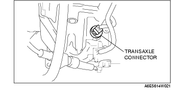
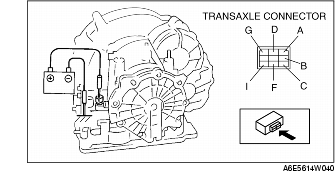
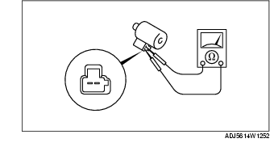
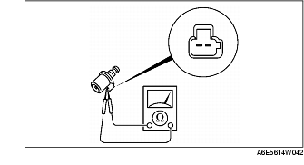
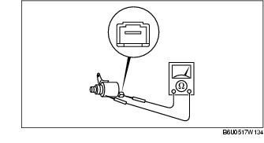

Solenoid valve inspection [FN4A-EL]
Resistance Inspection (On-Vehicle Inspection)
- • Water or foreign objects entering the connector can cause a poor connection or corrosion. Be sure not to drop water or foreign objects on the connector when disconnecting it.
1. Disconnect the negative battery cable.
2. Remove the fresh-air duct. (See INTAKE-AIR SYSTEM REMOVAL/INSTALLATION [ZY].)
3. Disconnect the transaxle connector.

- • When inspecting the pressure control solenoid, connect the ground connection to the ground terminal (terminal I) of the pressure control solenoid inside the solenoid valve connector.
4. Measure the resistance between the following terminals.

- • If there is any malfunction, inspect the ground, then perform the operating inspection.
Solenoid valve resistance (ATF temperature: -40-150 °C {-40-302 °F})
5. Connect the transaxle connector.
6. Install the fresh-air duct. (See INTAKE-AIR SYSTEM REMOVAL/INSTALLATION [ZY].)
7. Connect the negative battery cable.
Operating Inspection
1. Disconnect the transaxle connector.
- • Do not apply battery position voltage to terminals A, B, C, D, F and G for more than three seconds.
2. Apply battery positive voltage to terminals A, B, C, F or G and battery negative voltage to GND, and verify that operating sound is heard from solenoid.
3. Apply battery positive voltage to terminal D and battery negative voltage to terminal I, and verify that operating sound is heard from solenoid.

Resistance Inspection (Off-Vehicle Inspection)
1. Remove the control valve body. (See SOLENOID VALVE REMOVAL/INSTALLATION [FN4A-EL].)
2. Measure the resistance of each solenoid valve individually.
3. Install the control valve body. (See SOLENOID VALVE REMOVAL/INSTALLATION [FN4A-EL].)
Pressure control solenoid

Resistance
Shift solenoid A, B, C

Resistance
Shift solenoid D, E

Resistance